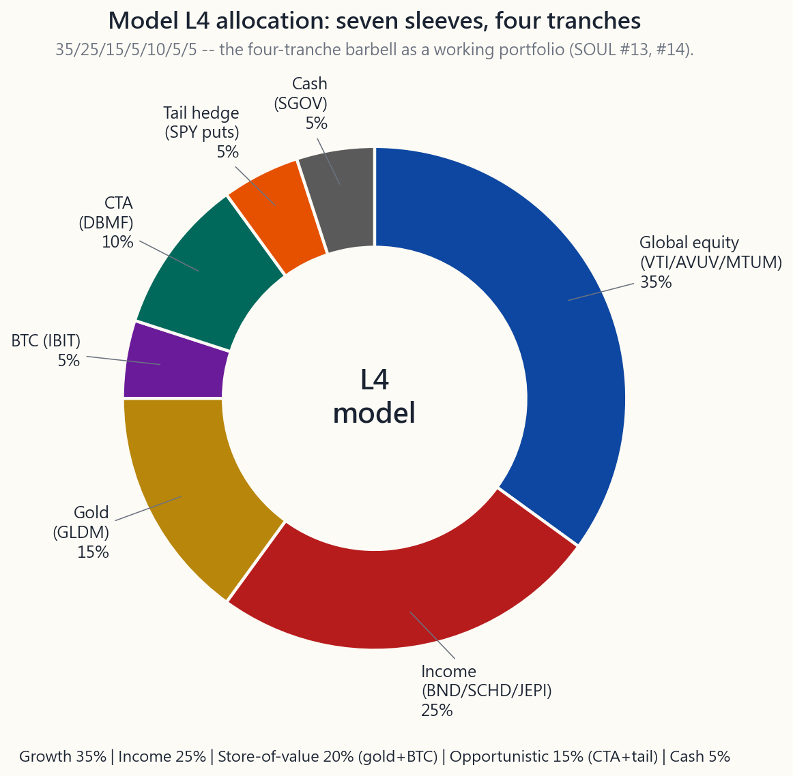

Week 52: L4 Capstone — Your Full Investment Policy Statement
1. Why This Is Important
This is the L4 capstone — the last reading of the course, and the one the previous fifty-one weeks were preparing you to write. Not for an employer. Not for a client. For yourself. A personal investment policy statement (IPS) is the document that says, in plain English, what you own, why you own it, when you change it, and what would have to be true for you to walk away from any of it. Every institutional allocator on earth has one. Almost no retail investor does. That is the single biggest gap between the two cohorts — bigger than any strategy, factor, or fee difference this course has discussed.
You need this synthesis lesson for four reasons.
under stress.** When the S&P drops 20% in a quarter and your neighbour is selling everything, the only thing that keeps you buying is something written down before the crash that says "this is my plan, this is the band that triggers a rebalance, this is the maximum drawdown my plan tolerates, here is the monitoring KPI I check, and here is the date I review next." A plan stored only in your head is the plan most likely to be abandoned the day it matters most. The same point in different words: the market can stay irrational longer than you can stay solvent — and staying requires the discipline that only a written policy can enforce.
a master document.** Level 1 gave you beta and 60/40. Level 2 gave you factor tilts, long/short, sectors. Level 3 gave you options income, tail hedges, dividend ladders. Level 4 gave you managed futures, vol arb, microstructure, and quant methods. Each layer was correct in isolation. *Layered together carelessly*, they become a Frankenstein book — too much equity beta hiding under three different labels (broad index + factor tilt + dividend equity all loading on market beta), insufficient diversifiers, fees stacked on fees, and a tail hedge that bleeds 2% a year because nobody wrote down when to take it off. The IPS is what forces you to size each piece honestly.
here.** Growth / Income / Store-of-value / Opportunistic was first introduced in week 15 as an asset-class lens, then reapplied as a strategy lens in week 24. In this lesson it becomes the governance lens — every line on your IPS belongs to one of the four tranches, every tranche has a target weight band, and every band has a rebalancing trigger. The same shape, applied one more time, at the level where the buck stops.
most active managers underperform. Week 45 said it twice as bluntly: most retail strategies are statistical noise. The evidence-supported sources of long-run outperformance for a retail investor are not novel security picks; they are structural — tax location, behavioural discipline, the volatility-tail-wagging-the-dog asymmetry, barbell sizing, and the single-decision commitment to a written rebalancing rule. None of those require forecasting skill. All of them require an IPS.
This week has two new charts — the model L4 allocation pie and the 2010-Apr 2026 wealth-path comparison — and one new tool: the IPS builder, which takes your age, retirement age, portfolio size, and target retirement income and emits a draft policy document with a seven-sleeve allocation and a projected wealth fan chart. Read the prose, run the numbers, then write your own.
2. What You Need to Know
2.1 What an IPS Actually Is
An investment policy statement is a one-page contract between the present-tense version of you who is calm enough to read this lesson and the future-tense version of you who will not be calm. Six sections, in this order:
| Section | What it specifies |
|---|---|
| Goals | What this money is for. Retirement income at age N. House down-payment in five years. Generational transfer. One primary goal per IPS. Multiple goals = multiple IPSs. |
| Time horizon | Years until first withdrawal, and expected duration of withdrawals. A 25-year-old saving for retirement at 65 has a 40-year accumulation horizon plus a 30-year decumulation horizon. |
| Risk tolerance | The single number that matters: maximum drawdown you will not sell into. Not "moderate" or "aggressive" — a percentage. 25%? 40%? 60%? Be honest. |
| Target allocation | The weights of each sleeve, with rebalancing bands. |
| Rebalancing rule | The trigger and the cadence. e.g. "annually in January, plus any sleeve drifting more than 5 percentage points from target." |
| Monitoring KPIs and review cadence | Which numbers you check, how often, and what would force a full IPS rewrite. |
Two clauses I recommend adding to a personal IPS that almost nobody writes down:
- Tax-location appendix. Every sleeve has a
- An explicit "stop-rule" for active sleeves. If your factor
The IPS is short. One page is plenty. The point is not the prose quality. The point is that somebody — usually a slightly panicked future you — has to be able to read it in three minutes and know what to do.
2.2 The Model L4 Allocation — One Honest Take
Here is one defensible model L4 allocation for a US-domiciled investor with a 20+ year accumulation horizon, a moderate-aggressive risk tolerance (max drawdown tolerance ~35%), and a portfolio large enough to express seven sleeves cleanly (somewhere upward of $200,000 — below that the small sleeves cost more in friction than they earn).
| Tranche | Sleeve | Weight | Vehicle examples | Why this slice |
|---|---|---|---|---|
| Growth | Global equity (broad + factor tilts) | 35% | VTI 20% + AVUV 8% + MTUM 7% | The week-23 factor evidence: small-value + momentum has earned ~1.5% / yr over plain beta on long horizons, with diversifying factor exposure. |
| Income | Bond + dividend + premium-write | 25% | BND 10% + SCHD 10% + JEPI 5% | The week-36 income hierarchy. Bonds for duration ballast, SCHD for qualified dividends, JEPI as the 1-2% premium-write overlay. |
| Store-of-value | Gold | 15% | GLDM | The classic store-of-value sleeve. Per week 6, gold pays no coupon — it's the belief asset that hedges fiat-debasement and real-rate regimes. |
| Store-of-value | Crypto | 5% | BTC (held via spot ETF, e.g. IBIT) | Pure right-tail barbell sliver. 5% is enough to matter on a 10x; small enough that a 90% drawdown costs 4.5% of the book. |
| Opportunistic | Managed futures (CTA) | 10% | DBMF (or KMLM) | Week 51's diversifier. Not a return engine — a 2008 / 2022 crisis-alpha sleeve, low correlation to equity beta. |
| Opportunistic | Tail hedge (long-dated SPY puts) | 5% | 25-30% OTM SPY puts, 60-90 DTE, ladder | Week 47's Universa-style sleeve. Bleeds ~1-2% / yr in calm regimes. Pays back the entire book — and then some — in a -30% or worse equity drawdown. |
| Cash | T-bills / cash | 5% | SGOV / BIL or money-market | Reserve for rebalancing trigger and opportunistic adds. Per week 8 working capital — the dry powder. |
Total: 100%. Equity-like beta exposure: ~35% pure equity + ~10% SCHD + ~5% JEPI = ~45-50% net equity. That is the honest read — the bond / gold / cash / CTA / tail-hedge sleeves between them account for ~50% of the book. The portfolio is closer to an all-weather posture than a 60/40, with explicit barbell wings on both sides.

This is one opinion. It is not the only defensible answer. A 50-year-old five years from retirement should run a much smaller equity sleeve and a larger income sleeve. A 28-year-old should probably skip the tail-hedge and the cash and run 90/10 VTI/AVUV until the portfolio is large enough that the sleeves matter. The template is the shape — growth + income + SoV + opportunistic + cash, with a four-tranche label on every line — not the exact weights.
2.3 What the Backtest Says — 2010 to April 2026
The wealth-path image below tracks four portfolios from January 2010 through April 2026 with annual rebalancing: 100% S&P 500, classic 60 / 40, all-weather (per the canonical Bridgewater-shaped allocation discussed in week 15: 30% equity / 55% bonds / 7.5% commodities / 7.5% gold), and the L4 model from §2.2.
| Portfolio | CAGR | Annualised vol* | Worst calendar year | Sharpe (rf = 2.0%) |
|---|---|---|---|---|
| 100% S&P 500 | 13.1% | 13.3% | -18.1% (2022) | 0.84 |
| 60 / 40 | 9.0% | 9.1% | -16.1% (2022) | 0.77 |
| All-weather | 5.8% | 6.3% | -11.4% (2022) | 0.61 |
| L4 model | 8.3% | 6.7% | -2.7% (2022) | 0.94 |
*Vol and worst-year are from the annual-return series; intra-year peak-to-trough drawdowns are larger (the S&P's actual peak-to-trough in 2020 was -34%, and in 2022 was -25%; the L4 model's intra-year drawdown in those windows was substantially less, but never zero).
Two observations.
First, the L4 model does not beat 100% S&P on raw return. It is not supposed to. The S&P book has higher CAGR — and ~7x the worst calendar-year loss. The Sharpe difference is the actual case for diversification: the L4 earns ~5 percentage points less of CAGR than the S&P over this window in exchange for cutting the worst year from -18% to -3%. That trade is worth it for any investor who has ever sold into a -30% market — which, per week 11's Dalbar evidence, is most of them.
Second, the L4 model has a higher Sharpe than 60/40 — 0.94 vs 0.77 — even though 60/40 ends with slightly more terminal wealth over this exact window because of its larger equity sleeve. The reason is the diversifier sleeves. The CTA and tail hedges did almost nothing in the 2010-2019 bull market (slight drag, by design). They did their entire job in 2020 and 2022. Every year except those two, the L4 book lagged a vanilla 60/40. The two crisis years are where the L4 vol number comes from — 6.7% versus 60/40's 9.1% — and where the Sharpe gap opens. That is the entire vol-tail-wags-dog thesis in one backtest. Higher risk-adjusted return, smaller crisis losses, slightly less terminal wealth in a relentlessly equity-favourable window.
![Wealth-path comparison from Jan 2010 to Apr 2026 of four portfolios on a log y-axis. 100% S&P 500 ends highest at ~8x. 60/40 ends second at ~4.3x. The L4 model ends third at ~3.9x but with the smallest realised vol and worst-year loss of the four. All-weather ends at ~2.6x. The L4 line tracks 60/40 closely through 2019, then opens a clear positive gap during 2020 and 2022 when the diversifiers fire, after which 60/40's larger equity sleeve narrows the wealth gap in 2023-2025. Annotation in upper-left listing CAGR / vol / Sharpe / max-DD for each strategy.](image/week52_backtest_compare.png)
Backtests deserve every disclaimer week 46 stacked on them — survivorship, look-ahead, regime-dependence, fee approximation. Treat the table above as illustrative of shape, not as forecast. The IPS does not need to predict the future to be useful. It only needs to be the plan that is hardest for a panicked future-you to abandon.
2.4 Rebalancing Rules That Actually Work
Three rebalancing approaches; pick one and write it down.
| Approach | Trigger | Pros | Cons |
|---|---|---|---|
| Calendar | Once a year on a fixed date (e.g. first business day of January) | Trivially simple. Tax-aware (lets gains crystallise on your timetable). | Drifts heavily mid-year in volatile regimes. |
| Band | Any sleeve drifts more than X percentage points from target. Common: ±5% (absolute) or ±25% (relative). | Responsive. Forces buy-low / sell-high mechanically. | More trades = more tax events in taxable accounts. |
| Hybrid | Annual calendar review plus any sleeve breaching ±5% triggers an immediate trim/add of just that sleeve. | Best of both. The default I recommend. | Slightly more bookkeeping. |
The 5% band on a 35% target sleeve means action when it drifts to either 30% or 40%. On a 5% sleeve, ±5% means action at 0% or 10% — a loose band on small sleeves is a feature, not a bug. Tiny sleeves should be checked but not over-traded.
Three implementation notes on tax location:
- Rebalance with new contributions first (buy what's underweight)
- In an IRA, rebalance freely — there's no tax friction.
- The tail-hedge sleeve has its own clock — typically rolled
2.5 Tax Location — The Map, Not Just the Allocation
Tax-location capstone restated: every sleeve has a preferred home, and the cost of putting a sleeve in the wrong account compounds.
| Sleeve | Preferred account | Why |
|---|---|---|
| Bonds (BND, SGOV) | IRA / 401(k) | Coupon income is ordinary; sheltering it dominates the return-drag math. |
| Dividend equity (SCHD, VYM) | Taxable | Qualified dividends use the LTCG schedule (0/15/20%). Wasting them in a tax-deferred account converts them back to ordinary on withdrawal. |
| Premium-write (JEPI, QYLD) | IRA | Most JEPI/QYLD distributions are ordinary or short-term cap-gain — IRA shelter is critical. |
| REITs (VNQ) | IRA | 80% of distributions are non-qualified ordinary; the 199A deduction does not fully fix it. |
| Broad equity (VTI) | Taxable, with tax-loss harvesting | Qualified dividends + LTCG on appreciation. Year-end TLH reaps banked losses without changing the allocation. |
| Factor tilts (AVUV, MTUM) | Either; lean taxable | Same logic as broad equity if held > 1 year. |
| Gold (GLDM) | Roth IRA if available, else taxable | Long-term physical-gold ETFs are taxed as collectibles at 28% federally — a Roth shelter avoids that entirely. |
| BTC (IBIT) | Roth IRA if available | Same logic — and Roth captures the asymmetric upside tax-free. |
| CTA (DBMF) | Either | DBMF distributes Section 1256-style 60/40 tax treatment; modest taxable hit either way. |
| Tail hedge (SPY puts) | Taxable, Section 1256 if SPX-based | SPX-listed options qualify for Section 1256's 60/40 blended rate; SPY-listed options do not. SPX is the more tax-efficient venue if available. |
| Cash (SGOV / BIL) | Either; lean taxable in high-yield environments | T-bill interest is state-tax-exempt; can offset some federal sting. |
The IPS appendix says, in two columns: Sleeve / Account. That is the map. Most portfolios that look identical at the allocation level differ by 0.5-1.0% per year purely because of where each sleeve actually sits. Over 30 years that compounds to roughly 15-30% of terminal wealth. The map matters.
2.6 Monitoring KPIs — The Four Numbers You Actually Read
You do not need a Bloomberg terminal. You need four numbers, on a spreadsheet you check quarterly:
yield) / 12-month realised vol. If it has been negative for two consecutive years, you investigate — that is a regime check, not a trade trigger. Per week 17, Sharpe is noisy on short windows; do not over-act.
over the trailing year, annualised. If it is more than 1.5x the value implied by your IPS, the book has drifted into a riskier posture than you signed up for.
peak_value. The single number you wrote on your IPS as your tolerance. If you hit 80% of it, you call a review meeting with yourself.
target weight. The ±5% band test from §2.4.
Quarterly is enough. Monthly is fine. Daily is destructive — the Dalbar-style behaviour gap (week 11) is generated by daily checking. Stick the spreadsheet on a calendar reminder and do nothing in between. The closest a living person gets to a forgotten portfolio is a quarterly check-in.
2.7 The Withdrawal Side — When You Stop Adding
Most of this course assumed accumulation. The IPS for the decumulation phase changes three things and three things only:
| Change | What it looks like in practice |
|---|---|
| Income engine | Re-tilt toward week 36's income hierarchy: shorter-duration bonds, dividend ladder, modest premium-write. The growth sleeve shrinks, but does not vanish — equities still need to fund the longest-tail decade of the retirement. |
| Withdrawal rule | Pick one: 4% rule (rigid; week 36's classic Bengen 4%, now closer to 3.7% on April-2026 yields), or 4.5%-flexible (cut withdrawals 10% in a year that ended down >15%). |
| Sequence-risk hedge | The cash + tail-hedge sleeves grow in retirement, not shrink. The first five years of retirement is when sequence-of-returns risk dominates; a year-or-two cash buffer plus an active tail hedge means you can avoid selling the equity sleeve into a drawdown. The barbell, directly applied. |
Everything else from the accumulation IPS — tax location, rebalancing rule, monitoring cadence — carries over unchanged. The discipline scaffold is the same.
2.8 The Stuff This Course Did Not Cover
Be honest about what an IPS cannot solve. Three things this course did not teach, deliberately, that you should think about:
- Estate planning. Beneficiary designations, transfer-on-death
- Insurance. Term life if anybody depends on your income.
- Spending. The single biggest variable in any retirement model
The IPS is a powerful tool within its scope. It does not pretend to be a financial plan. A real financial plan adds the three items above to the IPS and indexes the whole thing.
3. Common Misconceptions
portfolio."** Backwards. Institutions have a CIO whose full-time job is the portfolio. You don't. You're the part-time amateur, and you are the one who needs the written contract — because you have less attention bandwidth, not more, than the professional.
is not an IPS. An IPS specifies the target, the band, the rebalancing trigger, and the stop-rule. The holding list is a snapshot. The IPS is the rule that produced the snapshot and will produce the next one.
incremental diversification benefit is tiny and the friction — rebalancing trades, tax events, mental load — is large. The model in §2.2 is seven sleeves on purpose.
buy-low / sell-high effect, rebalancing has added roughly 0.2-0.5% per year on multi-asset books in long-run studies. The tax-friction cost is real but substantially smaller than the diversification gain, especially with a band rule that rarely triggers.
stress-tested by Bengen and Pfau against the 1929, 1937, and 1966 starting-year crucibles, and survived in 96% of historical 30-year windows. April-2026 starting yields actually make it more, not less, defensible than the 2018-2021 zero-rate environment did. The honest April-2026 number is closer to 3.7% rigid / 4.5% flexible — still not broken.
regimes, by design. They are positive expected-return convex instruments only when sized correctly and managed correctly (week 47). On a 5% sleeve at 25-30% OTM, 60-90 DTE, with quarterly rolls, the cost is roughly 1-2% of NAV per year and the payoff in a -30% market is roughly 30-60% of NAV. The asymmetry is the entire point.
positions overstate the case. The L4 model treats it as a 5% right-tail barbell sliver, small enough to be forgettable in a -90% drawdown and large enough to matter in a 10x. That sizing requires no theory of digital money — only an asymmetric-bet sizing rule.
defensible shape. They do not prove it will work in regimes the backtest didn't see — and the next twenty years almost certainly contains regimes the last sixteen years didn't see. Read week 46 again before quoting any historical Sharpe number to anyone, including yourself.
The whole point of writing it down is that it constrains future-you's behaviour. Update on a fixed cadence — typically annual review with a 3-year full rewrite — not on a whim triggered by a market move.
portfolio with a written IPS that says *"all in VTI; rebalance never; review annually"* will outperform a $200,000 portfolio that gets reshuffled every quarter on news headlines. The document is doing the work, not the dollar amount.
4. Q&A Section
Q1: How long should my IPS actually be? One page. Two pages including the tax-location appendix. If it's longer than that, you're confusing it with a research note. The IPS is the rule book; the research lives elsewhere.
Q2: I'm 28 and just starting. Do I really need seven sleeves? No. At your stage the marginal sleeve costs more in friction and mental load than it earns. A reasonable starter IPS is 90% VTI / 10% SGOV, rebalance annually, review yearly, until the portfolio crosses ~$100,000. Then you start layering sleeves. Two funds is a perfectly defensible IPS for the first decade.
**Q3: How is the L4 model different from the all-weather portfolio in week 15?** All-weather is a pure asset-class diversification story (equity / duration / inflation / gold). The L4 model adds the strategy layer on top — factor tilts inside the equity sleeve, premium-write overlay inside the income sleeve, CTA and tail-hedge as explicit crisis-alpha sleeves. Same four-tranche bones; more flesh.
Q4: What if I can't access SPX options for the tail hedge? SPY options are 90% as good. The 1256 tax treatment is the difference, and at most brackets it works out to ~0.3% / yr of after-tax difference on a 5% sleeve — call it 1.5 bps on the portfolio. Don't twist your account architecture to chase that. Use SPY puts if SPX is closed to you.
**Q5: My 401(k) only has nine fund choices and none of them are DBMF or AVUV. What do I do?** Express the L4 shape across your accounts, not within each account separately. Your 401(k) holds the cheapest broad funds it offers (typically a total-market index and a bond index). Your taxable brokerage and IRA hold the specialty sleeves (factor tilts, CTA, tail hedge). The IPS is at the household level, not per-account.
Q6: How often should I rewrite the whole IPS? Major life events trigger a rewrite (marriage, divorce, kids, moving states, retirement date moving). Otherwise plan a full review every three years and minor edits annually. The annual edit is usually one number — the inflation adjustment to your target withdrawal — and a Y/N on whether the band rule held up.
**Q7: What about Bitcoin's volatility — does the 5% sleeve actually help, or does it just add noise?** At 5%, Bitcoin's contribution to portfolio variance is small even at 70-80% annualised vol because the weight is squared. The case for it is asymmetric upside (the right-tail barbell), not diversification math. If a 90% drawdown in the BTC sleeve would make you abandon the policy, your sleeve is too large. Halve it, or zero it.
Q8: Should I include international equity (VXUS, EFA)? This course's house view is US-only investable. But the literature on international diversification is mixed; reasonable people add 15-25% VXUS to the global-equity sleeve. The IPS is where you commit either way. A defensible alternative is 25% VTI / 8% AVUV / 7% MTUM / 10% VXUS within the 35% growth sleeve. Pick one, write it, do not relitigate.
**Q9: What stop-rule should I write for active sleeves like CTA and factor tilts?** A common formulation: "If the sleeve underperforms its benchmark (MSCI USA Momentum for MTUM; SocGen CTA Index for DBMF) by more than 5% / yr cumulative over a rolling 5-year window, the sleeve is reduced to half-weight and reviewed at the next annual rewrite." The numbers (5%, 5 yrs) are illustrative; the commitment to write some number before the underperformance starts is the discipline.
Q10: Is the 4% rule still alive at April-2026 yields? Roughly yes. The original Bengen 4% number assumed a static 50/50 stock-bond portfolio and a 30-year retirement. Updated work (Pfau, Kitces, Bengen himself) on April-2026 starting valuations suggests 3.7% rigid / 4.5% flexible is the more honest pair right now — flexible meaning you cut withdrawals 10% in any year following a >15% portfolio drawdown. The flexibility buys you back roughly 80 bps of safe-withdrawal-rate.
**Q11: How does the 5% tail-hedge sleeve interact with the 5% cash sleeve?** They are paired. The cash sleeve is the dry powder used to fund the tail-hedge premium roll (~1-2% of portfolio per year), and also the rebalance-buy bucket when the equity sleeve drops below its band. Together they are the left-tail leg of the barbell — explicit insurance + ammunition.
Q12: When does this whole framework break? Two scenarios. Hyperinflation regime — bonds and cash both get crushed simultaneously; only gold and possibly equity (in nominal terms) save you. The L4 model has 15% gold for exactly this case but is still vulnerable. **Capital-controls / political regime change** — the assumption that US-listed assets remain freely tradable can be wrong. The course's working assumption is US-only for now; the IPS should still mention what the trigger for revisiting that conclusion would look like (capital controls, broad sanctions, currency reset). These are tail-of-tail scenarios; planning for them is itself a tradeoff.
翻譯稍後推出……
翻譯即將推出……
翻译即将推出……